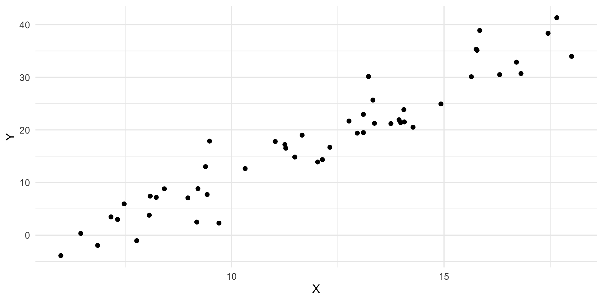
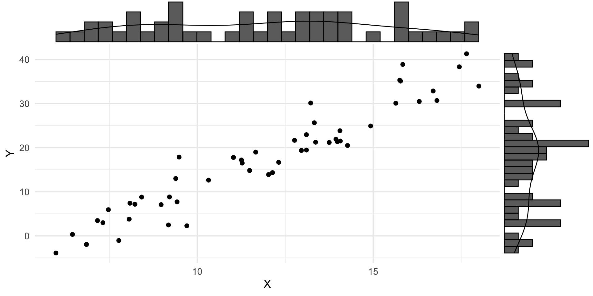
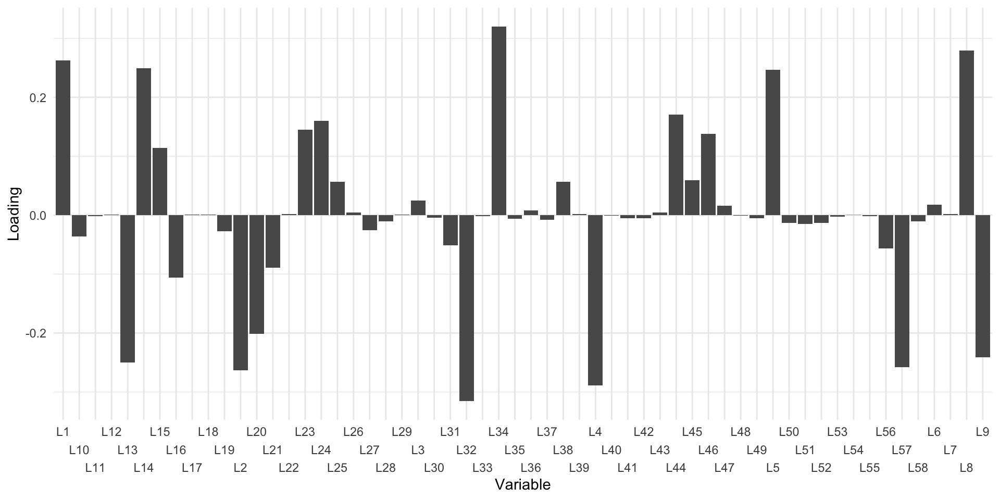
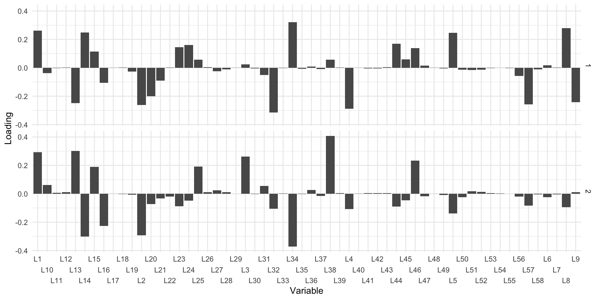
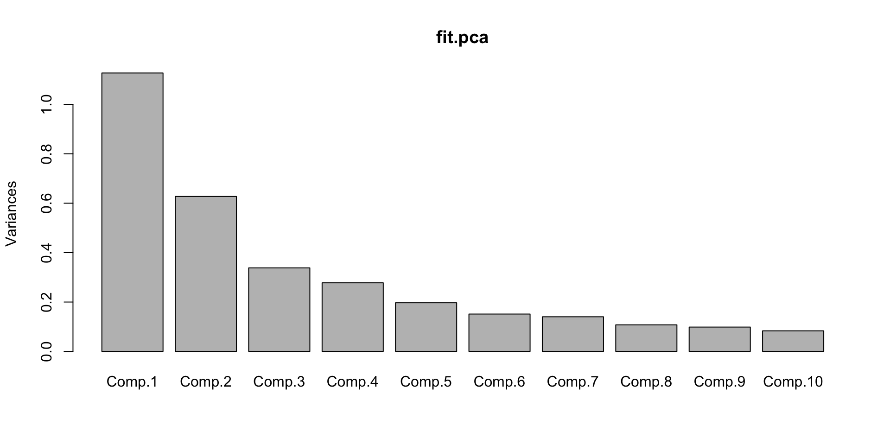
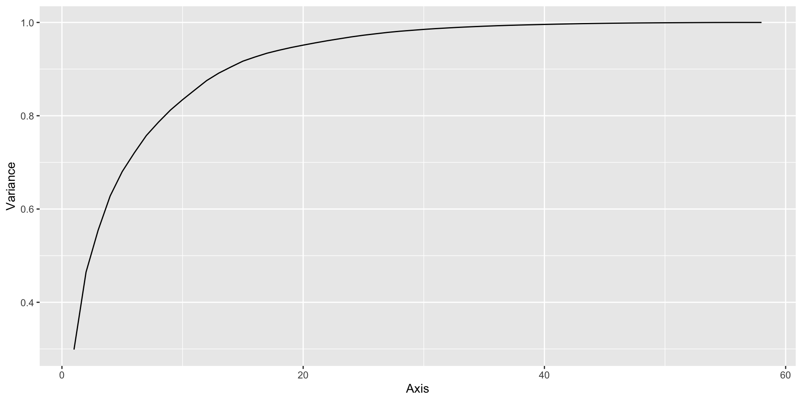
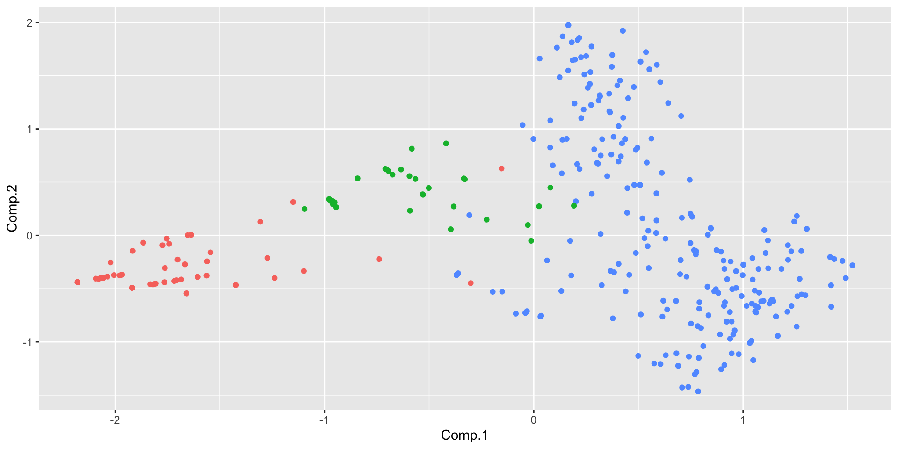
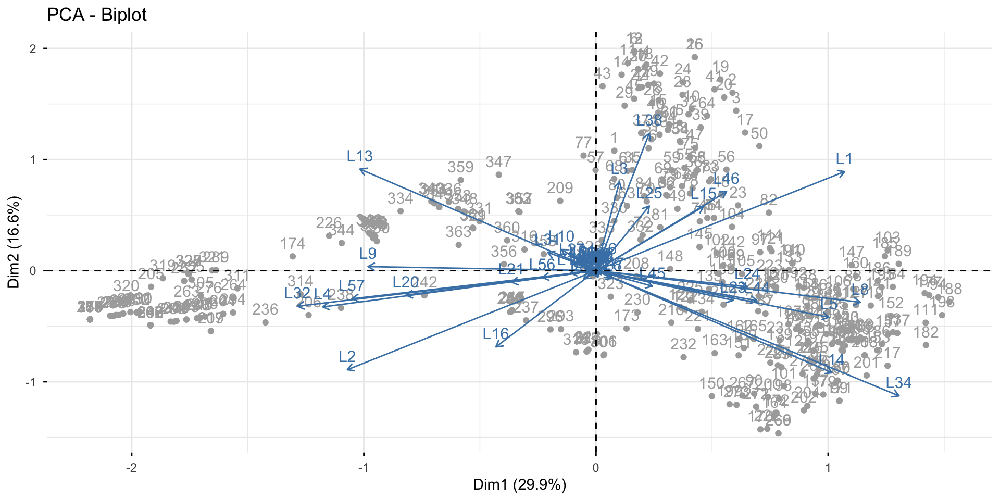
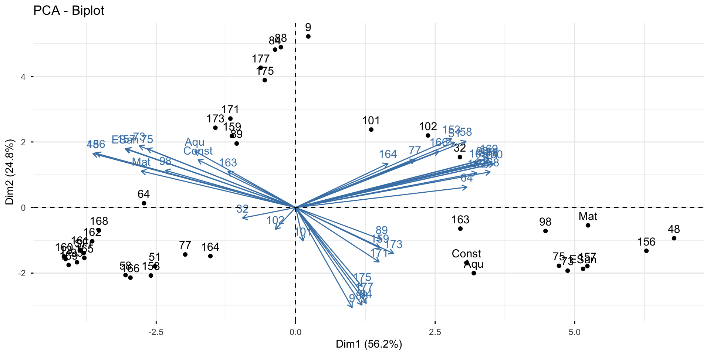
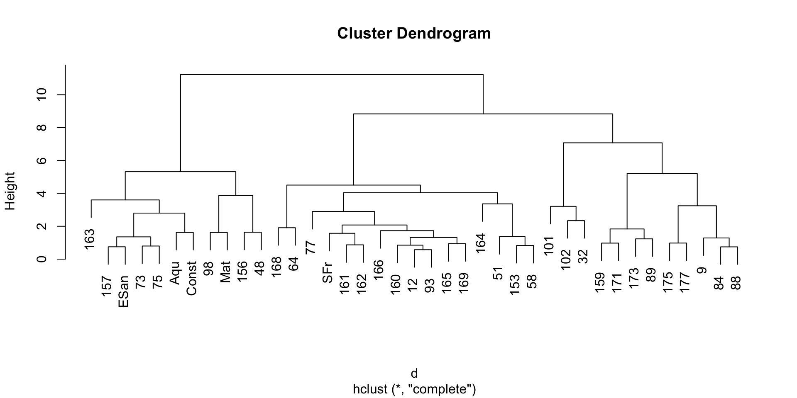

Ordination
Overall Impetus
There are many times when we have several columns of data recorded on indiviudal observations.
- Genotypes of individuals from seveal populations
- Species counts across sampling locations
- Climatic data (e.g., water/temperature) measured at several locations
Consequences
Some of the consequences of this is that we may have problems:
- Visualizing more than 2-3 dimensions of the data
- Understand which subset of the data are correlated (and thus redundant)
- Trouble identifying signal from noise
Are there methods for visualization and quantification of data like this?
Eigen Structure
Eigen Desconstruction
A method to factor high dimensional data into additive subcomponents
Just like you can factor the equation \(-6x^2 + 5x + 4 = 0\) into the factors \((2x+1)(-3x+4)\), large data sets with \(N\) rows and \(K\) columns of data can be factored based upon their column-wise mean values, variances, and covariances between columns of data.
Way Cool Matrix Algebra
Consider the matrix of data \(X\) with \(N\) rows and \(K\) columns. The variance of each of the \(K\) data columns and their covariances, can be represented as an \(KxK\) covariance matrix and is derived from this fancy formula.
\(S = X'[X'X]^{-1}X\)
\[ S = \left[ \begin{array}{cccc} \sigma_A^2 & \sigma_{AB}^2 & \ldots & \sigma_{AK}^2 \\ \sigma_{BA}^2 & \sigma_{B}^2 & \ldots & \sigma_{AK}^2 \\ \sigma_{CA}^2 & \sigma_{BC}^2 & \ddots & \sigma_{AK}^2 \\ \vdots & \vdots & \vdots & \vdots \\ \sigma_{KA}^2 & \sigma_{KD}^2 & \ldots & \sigma_{K}^2 \\ \end{array}\right] \]
Partitioning Variation & Covariation
So we can partition this matrix as:
\[ S = \sum_{i=1}^K \lambda_{i} \ell^\prime_i \ell_i \]
Where:
\(\lambda_i\) is a scaling number, and
\(\ell_i\) is a 1xK vector of values.
Principal Component Rotations
Consider the following data

Marginal Distributions

Creating Othoginal Data
The transformation you are doing is based upon applying a linear transformation of the original data from its previous coordinate space into an identically sized new coordinate space.
Performing a Principal Component Rotation
I’ve uploaded a copy of the mv_genos.csv file to Canvas that have the multivariate genotypes for 358 beetles from Baja California.
[1] "sdev" "loadings" "center" "scale" "n.obs" "scores" "call" The Loadings
L1 L2 L3 L4 L5
0.2628660866 -0.2628660866 0.0248192732 -0.2888386776 0.2462673596
L6 L7 L8 L9 L10
0.0179984818 0.0016666307 0.2794761414 -0.2410253796 -0.0363952645
L11 L12 L13 L14 L15
-0.0020237299 0.0011156756 -0.2495531915 0.2495605301 0.1137167082
L16 L17 L18 L19 L20
-0.1058342203 0.0009247692 0.0011292685 -0.0271295133 -0.2009849854
L21 L22 L23 L24 L25
-0.0894794321 0.0016951826 0.1451925502 0.1603314221 0.0563713256
L26 L27 L28 L29 L30
0.0046084445 -0.0252765528 -0.0107709900 0.0007691175 -0.0040732546
L31 L32 L33 L34 L35
-0.0510866809 -0.3156237769 -0.0013849223 0.3203569409 -0.0062226710
L36 L37 L38 L39 L40
0.0082983889 -0.0080616553 0.0563335889 0.0014640423 -0.0006912308
L41 L42 L43 L44 L45
-0.0052383317 -0.0051723502 0.0041538033 0.1703162391 0.0596061578
L46 L47 L48 L49 L50
0.1380620665 0.0161704613 -0.0009688126 -0.0054993346 -0.0129650071
L51 L52 L53 L54 L55
-0.0146861419 -0.0132207798 -0.0021984916 0.0003847249 -0.0020006013
L56 L57 L58
-0.0567494594 -0.2580010623 -0.0108909011 Loadings

Orthoginal Axes

Angle Between Axes
[1] 90The Contents
Call:
princomp(x = mv_genos)
Standard deviations:
Comp.1 Comp.2 Comp.3 Comp.4 Comp.5 Comp.6
1.061698e+00 7.920637e-01 5.815214e-01 5.270598e-01 4.439521e-01 3.890075e-01
Comp.7 Comp.8 Comp.9 Comp.10 Comp.11 Comp.12
3.745785e-01 3.281120e-01 3.140499e-01 2.888833e-01 2.789188e-01 2.775737e-01
Comp.13 Comp.14 Comp.15 Comp.16 Comp.17 Comp.18
2.453135e-01 2.223993e-01 2.175911e-01 1.833612e-01 1.755344e-01 1.554891e-01
Comp.19 Comp.20 Comp.21 Comp.22 Comp.23 Comp.24
1.481132e-01 1.388306e-01 1.353579e-01 1.313574e-01 1.254959e-01 1.243710e-01
Comp.25 Comp.26 Comp.27 Comp.28 Comp.29 Comp.30
1.157318e-01 1.076467e-01 1.056967e-01 9.662421e-02 8.682587e-02 8.645205e-02
Comp.31 Comp.32 Comp.33 Comp.34 Comp.35 Comp.36
8.012950e-02 7.437712e-02 7.245594e-02 6.626469e-02 6.477115e-02 6.015980e-02
Comp.37 Comp.38 Comp.39 Comp.40 Comp.41 Comp.42
5.691424e-02 5.224030e-02 4.980704e-02 4.848862e-02 4.699267e-02 4.499268e-02
Comp.43 Comp.44 Comp.45 Comp.46 Comp.47 Comp.48
4.307106e-02 3.992663e-02 3.676804e-02 3.431286e-02 3.255063e-02 2.898490e-02
Comp.49 Comp.50 Comp.51 Comp.52 Comp.53 Comp.54
2.627016e-02 2.549876e-02 2.414111e-02 2.379158e-02 2.286324e-02 2.086147e-02
Comp.55 Comp.56 Comp.57 Comp.58
1.603285e-02 1.153001e-02 1.281801e-08 0.000000e+00
58 variables and 363 observations.Summary
Importance of components:
Comp.1 Comp.2 Comp.3 Comp.4 Comp.5
Standard deviation 1.061698 0.7920637 0.58152144 0.5270598 0.44395210
Proportion of Variance 0.298668 0.1662292 0.08960214 0.0736049 0.05222268
Cumulative Proportion 0.298668 0.4648971 0.55449928 0.6281042 0.68032686
Comp.6 Comp.7 Comp.8 Comp.9 Comp.10
Standard deviation 0.38900745 0.37457847 0.32811201 0.31404988 0.28888328
Proportion of Variance 0.04009616 0.03717685 0.02852536 0.02613269 0.02211219
Cumulative Proportion 0.72042302 0.75759987 0.78612523 0.81225793 0.83437011
Comp.11 Comp.12 Comp.13 Comp.14 Comp.15
Standard deviation 0.27891882 0.27757370 0.24531350 0.2223993 0.21759112
Proportion of Variance 0.02061306 0.02041473 0.01594519 0.0131055 0.01254496
Cumulative Proportion 0.85498318 0.87539791 0.89134310 0.9044486 0.91699356
Comp.16 Comp.17 Comp.18 Comp.19
Standard deviation 0.183361196 0.175534390 0.155489101 0.148113176
Proportion of Variance 0.008908443 0.008164157 0.006405999 0.005812652
Cumulative Proportion 0.925902005 0.934066163 0.940472161 0.946284813
Comp.20 Comp.21 Comp.22 Comp.23
Standard deviation 0.138830586 0.135357878 0.13135736 0.12549595
Proportion of Variance 0.005106899 0.004854606 0.00457189 0.00417298
Cumulative Proportion 0.951391712 0.956246318 0.96081821 0.96499119
Comp.24 Comp.25 Comp.26 Comp.27
Standard deviation 0.124371006 0.11573182 0.107646698 0.105696669
Proportion of Variance 0.004098503 0.00354889 0.003070353 0.002960121
Cumulative Proportion 0.969089691 0.97263858 0.975708934 0.978669055
Comp.28 Comp.29 Comp.30 Comp.31
Standard deviation 0.096624206 0.086825865 0.08645205 0.080129498
Proportion of Variance 0.002473767 0.001997493 0.00198033 0.001701264
Cumulative Proportion 0.981142822 0.983140315 0.98512064 0.986821909
Comp.32 Comp.33 Comp.34 Comp.35
Standard deviation 0.07437712 0.072455937 0.06626469 0.064771153
Proportion of Variance 0.00146577 0.001391025 0.00116346 0.001111604
Cumulative Proportion 0.98828768 0.989678703 0.99084216 0.991953767
Comp.36 Comp.37 Comp.38 Comp.39
Standard deviation 0.0601597990 0.0569142372 0.0522402970 0.0498070360
Proportion of Variance 0.0009589582 0.0008582796 0.0007230997 0.0006573071
Cumulative Proportion 0.9929127254 0.9937710050 0.9944941047 0.9951514118
Comp.40 Comp.41 Comp.42 Comp.43
Standard deviation 0.0484886186 0.0469926718 0.0449926818 0.043071058
Proportion of Variance 0.0006229692 0.0005851231 0.0005363777 0.000491539
Cumulative Proportion 0.9957743810 0.9963595040 0.9968958817 0.997387421
Comp.44 Comp.45 Comp.46 Comp.47
Standard deviation 0.0399266336 0.0367680398 0.0343128610 0.032550634
Proportion of Variance 0.0004223887 0.0003582019 0.0003119614 0.000280741
Cumulative Proportion 0.9978098095 0.9981680114 0.9984799727 0.998760714
Comp.48 Comp.49 Comp.50 Comp.51
Standard deviation 0.0289848950 0.0262701580 0.0254987599 0.0241411117
Proportion of Variance 0.0002226027 0.0001828573 0.0001722761 0.0001544193
Cumulative Proportion 0.9989833164 0.9991661737 0.9993384498 0.9994928691
Comp.52 Comp.53 Comp.54 Comp.55
Standard deviation 0.0237915802 0.022863237 0.0208614696 1.603285e-02
Proportion of Variance 0.0001499801 0.000138504 0.0001153126 6.810964e-05
Cumulative Proportion 0.9996428491 0.999781353 0.9998966657 9.999648e-01
Comp.56 Comp.57 Comp.58
Standard deviation 1.153001e-02 1.281801e-08 0
Proportion of Variance 3.522465e-05 4.353397e-17 0
Cumulative Proportion 1.000000e+00 1.000000e+00 1Accumulation of Variation

Assymptotic Description

Visualizing

Detailed Visualizations

Principal Coordinate Analysis
Like PCA but using distance matrices instead of raw data.
[1] 39 39Importance of components:
PC1 PC2 PC3 PC4 PC5 PC6 PC7
Standard deviation 3.4963 2.3244 1.38995 0.76870 0.62286 0.5129 0.4473
Proportion of Variance 0.5622 0.2485 0.08884 0.02717 0.01784 0.0121 0.0092
Cumulative Proportion 0.5622 0.8106 0.89946 0.92664 0.94448 0.9566 0.9658
PC8 PC9 PC10 PC11 PC12 PC13 PC14
Standard deviation 0.39332 0.31379 0.26270 0.23524 0.20290 0.1976 0.18482
Proportion of Variance 0.00711 0.00453 0.00317 0.00254 0.00189 0.0018 0.00157
Cumulative Proportion 0.97289 0.97742 0.98059 0.98314 0.98503 0.9868 0.98839
PC15 PC16 PC17 PC18 PC19 PC20 PC21
Standard deviation 0.18292 0.16247 0.14794 0.14137 0.13605 0.12182 0.11651
Proportion of Variance 0.00154 0.00121 0.00101 0.00092 0.00085 0.00068 0.00062
Cumulative Proportion 0.98993 0.99115 0.99215 0.99307 0.99392 0.99461 0.99523
PC22 PC23 PC24 PC25 PC26 PC27 PC28
Standard deviation 0.11066 0.1039 0.10234 0.09489 0.08724 0.08436 0.07748
Proportion of Variance 0.00056 0.0005 0.00048 0.00041 0.00035 0.00033 0.00028
Cumulative Proportion 0.99579 0.9963 0.99677 0.99719 0.99754 0.99786 0.99814
PC29 PC30 PC31 PC32 PC33 PC34 PC35
Standard deviation 0.07707 0.07387 0.06873 0.06740 0.06523 0.06105 0.05838
Proportion of Variance 0.00027 0.00025 0.00022 0.00021 0.00020 0.00017 0.00016
Cumulative Proportion 0.99841 0.99866 0.99888 0.99909 0.99929 0.99946 0.99961
PC36 PC37 PC38 PC39
Standard deviation 0.05684 0.05523 0.04602 4.188e-16
Proportion of Variance 0.00015 0.00014 0.00010 0.000e+00
Cumulative Proportion 0.99976 0.99990 1.00000 1.000e+00
Hierarchical Clustering
Clustering
A technique to build a representation of similarity between objects.
Supervised
Unsupervised
Individual or Group Based

Greedy Hierarchical Clustering
- Find the two closest of the N objects.
- Merge them together and find the mean of their location, this is the new node.
- Find the two closes of the \(N-1\) objects.
- Repeat until they are all done.

Help File for hclust
Visualizing From Distance Views
Requires that the matrix objects actually be turned into dist objects (which are matrix objects with constraints).
101 102 12 153 156 157
102 2.048994
12 3.972442 4.342952
153 4.099369 4.364062 1.860651
156 4.727214 4.754565 4.901142 4.871141
157 4.541334 4.629884 4.510097 4.532973 1.073274
159 3.733735 4.047019 2.537027 3.302282 4.434527 4.121070Visualizing From Distance Views
Call:
hclust(d = d)
Cluster method : complete
Distance : euclidean
Number of objects: 39 
Interactive Plots
Questions
If you have any questions, please feel free to either post them as an “Issue” on your copy of this GitHub Repository, post to the Canvas discussion board for the class, or drop me an email.
 :::
:::